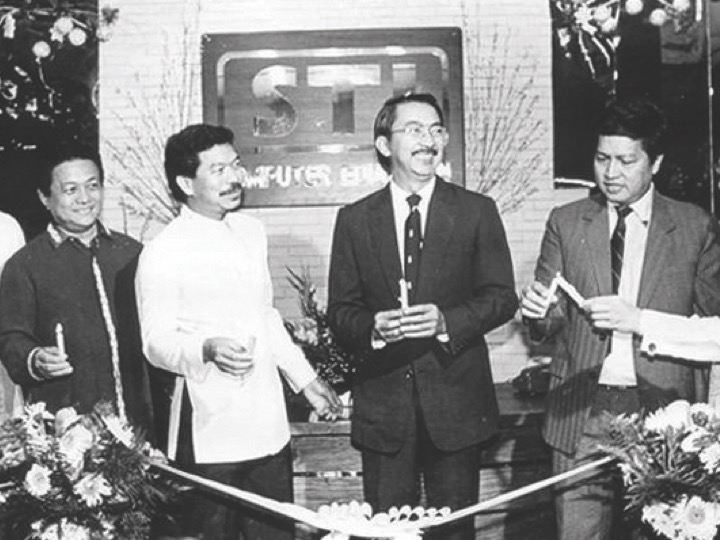
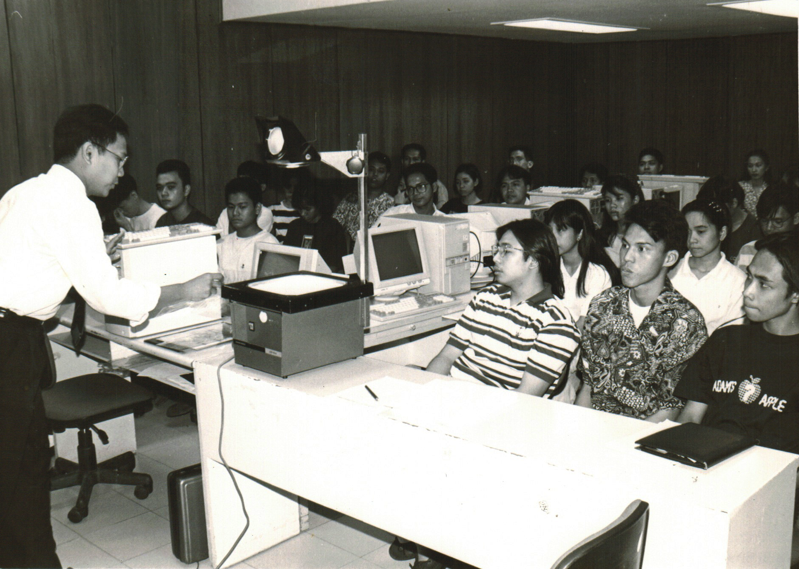
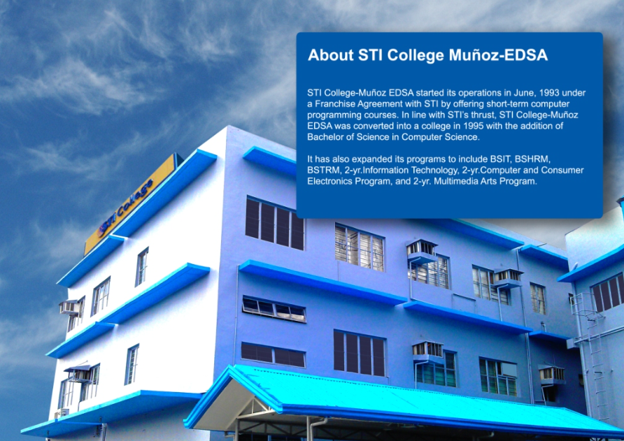

Early in 1983, four Filipino professionals who were deeply involved in the Information Technology (IT) industry envisioned a school. That school was to be dedicated to the production of graduates qualified to meet the standards of systems development in Europe, Australia, and North America. On August 21, 1983, that vision became a reality on the inauguration of SYSTEMS TECHNOLOGY INSTITUTE (STI).
STI was initially expected to provide qualified manpower to only its sister companies and their clients. Thus STI began with branches in only three locations in Metro Manila – Binondo in Manila, España Extension in Quezon City, and Buendia in Makati The Filipino public’s response to STI was unexpected. STI soon found it necessary to establish more branches in Metro Manila and the provinces – to make it more convenient for the greater part of the population to attend classes at STI. It was at this time that STI COLLEGE–MUÑOZ EDSA was founded by IT and business professionals and became the 54th school of STI.
The Filipino public’s response to STI was unexpected. STI soon found it necessary to establish more branches in Metro Manila and the provinces – to make it more convenient for the greater part of the population to attend classes at STI. It was at this time that STI COLLEGE–MUÑOZ EDSA was founded by IT and business professionals and became the 54th school of STI.
Today, STI is a recognized name in the Philippine educational landscape, with its diverse programs and a strong focus on preparing students for the global workforce.


The next years saw STI COLLEGE- MUÑOZ EDSA’s expansion in its facilities and programs. From a school with only three classrooms in 1993, it now has more fully air-conditioned classrooms, computer laboratories, and state-of-the-art kitchen, and dining laboratories. It built a covered court where the students’ Physical Education (P.E.) classes, and other social events, are held. It has also expanded its programs to include Bachelor of Science in Computer Science, Bachelor of Science in Information Technology, Bachelor of Science in Hotel and Restaurant Management, Bachelor of Science in Travel Management, 2- year Information Technology Program, 2-year Computer and Consumer Electronics Program, and 2-year Multi-media Arts Program.
STI COLLEGE-MUÑOZ EDSA continues and will continue to stand committed to its vision and mission.
We are an educational institution composed of dedicated and competent personnel who provide quality education and services to our community of learners.
We advocate “ANGAT ESTUDYANTE” principle through development of four important values of our students: Pursuit of Knowledge, Positive Attitude, Interpersonal skill, and integrity.
We build an effective partnership with the family of our learners, involving them in training our students to be productive citizens of our country.
We provide education for real-life programs and activities to challenge student in maximizing their full potential.